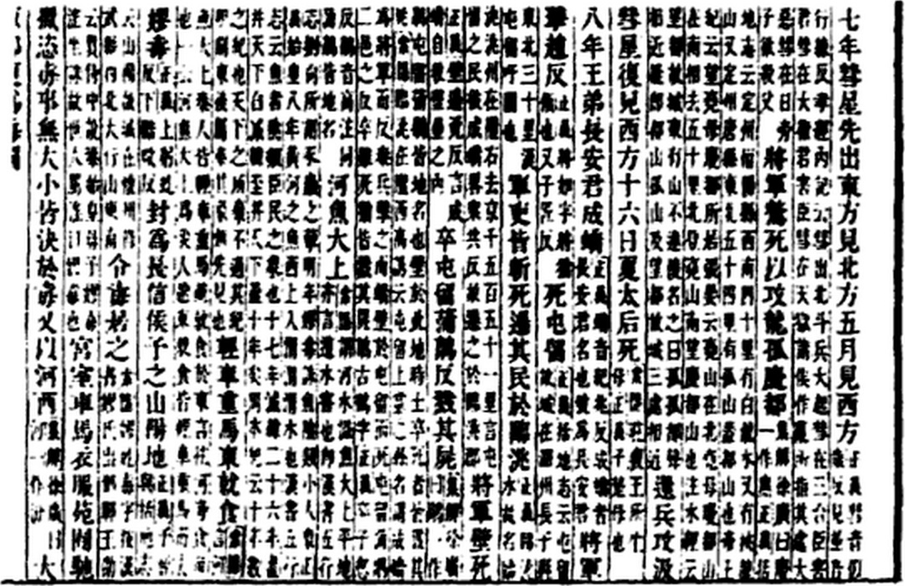

第 25 章
正史中的最后一笔
司马迁在竹简上写下最后一个字的时候，窗外长安城的更鼓恰好敲过三响。他搁下笔，将那片墨迹未干的简牍放在案角晾着。案上已经堆了厚厚一叠，从右至左排列，是这一日修成的列传草稿。烛火晃动，光掠过那些密密麻麻的隶书小字，掠过“淮南”“衡山”“伍被”这些反复出现的人名和地名，最后落在末尾几行——那里提到了一个他少年时便听说过的名字，一个在秦汉之际无数传闻中反复出现的名字。
徐福。这两个字在《淮南衡山列传》的竹简上只占据不到三指宽的篇幅，被他安排在伍被的长篇谏言中间，夹在“秦皇帝大说，遣振男女三千人”和“百姓悲痛相思，欲为乱者十家而六”之间，像一枚楔子钉入两块巨石之间的缝隙里。若不细看，几乎会忽略过去。
但司马迁知道，这一笔落下，这件事在他手中便算是有了一个交代。不是结局，是交代。
他从未打算为徐福立传——那毕竟是方士，毕竟在《秦始皇本纪》和《封禅书》中已有记载——但他在整理淮南王一案的案卷时，发现伍被供词中反复出现了这个名字。
淮南王刘安谋反，事败自杀，党羽牵连数千人，廷尉的案牍堆积如山。武帝命他参酌这些案牍修撰列传，他翻检伍被的供状，注意到一个细节：这位淮南王身边最受信任的谋士，在劝说主公放弃谋反时，引用了徐福的事迹作为论据。这个细节让他心头一动。
他重新摊开已经誊抄好的《秦始皇本纪》相关段落，又取出从兰台调阅的《封禅书》副本，将三处记载并排放在案上。同一件事，三个位置，三种讲述方式，如同三面铜镜从不同角度映照同一个物什，各自呈现出对方缺失的棱面。
他沉吟良久，终于决定在伍被的谏言中保留这个段落——不是因为他相信徐福真的登上了某座海外岛屿自立为王，而是因为伍被相信，或者说，淮南王刘安会相信。这才是关键。
伍被的谏言是一篇精心编织的修辞织物，每一根丝线都指向同一个目的：劝阻谋反。
他列举秦政之失，一个例子接一个例子地铺排，从骊山陵墓到阿房宫，从焚书坑儒到求仙东海，所有秦政的失败在他口中都被编织成一条完整的因果锁链——帝王欲望导致人口流失，人口流失引发民间怨恨，民间怨恨最终瓦解帝国根基。徐福的故事在整条锁链中占据一个不成比例的醒目位置，被放置在秦始皇“遣振男女三千人”与“百姓悲痛相思”这两个巨大的事实板块之间，既承担着过渡功能，又在过渡中完成了叙事自身的变形。
司马迁重新研读那段供词的原件时，察觉到了一种微妙的位移。伍被的叙述当然来自审讯记录，记录中的措辞必然是经过廷尉属吏誊写整理的，但核心情节——徐福以“海神”索求为名骗取童男女、五谷、百工而后“得平原广泽，止王不来”——这个核心情节不可能由审讯官吏凭空杜撰。它要么来自伍被本人的口述，要么是淮南王府中流传已久的说法，在审讯过程中被伍被作为一种现成的论据提取出来。
无论是哪种情况，都意味着这个版本的徐福故事在武帝元狩年间已经在齐地乃至更广的范围内传播开来，并且被士人阶层所接受和引用。伍被引用它，如同儒生引用《诗》《书》，如同纵横家引用战国策士的说辞——典故一旦成立，便获得了独立于史实之外的说服力。没有人会在引用典故时考证其真伪，人们只关心它在当下语境中能否构成有力的论证。
伍被的论证逻辑大致是这样展开的：暴秦以天下奉一人，竭天下之财货、子女以充无穷之欲，最终失去天下民心。徐福事件被嵌入这个逻辑链中，作为“竭子女以充欲”的典型案例。《史记·淮南衡山列传》明确记载了这链条的终点：“秦皇帝大说，遣振男女三千人，资之五谷种种百工而行。徐福得平原广泽，止王不来。于是百姓悲痛相思，欲为乱者十家而六。”
三千童男女从齐地沿海被征集上船，一去不返，他们的父母在海岸上望眼欲穿，悲恸化为怨恨，怨恨化为反秦的动力——“欲为乱者十家而六”。这个数字当然不是严谨的统计，而是修辞中的夸饰。但夸饰本身恰恰暴露了叙事的功能：伍被不是在复述历史，他是在构造一个道德寓言。在这个寓言中，徐福的形象发生了微妙而根本的转变。
在《秦始皇本纪》的记载中，徐福——或写作徐巿——是一个被反复提及的名字，出现在秦始皇东巡的时间线上，与卢生、侯生、韩终等其他方士并列。他上书言海中三神山，受命携带童男女入海求仙人，数年无功而返，归咎于“大鲛鱼”所阻，最终再次领命出海，“遂不返”。
这个版本的叙事是开放性的：不返可能是因为遇难，可能是因为成功登上了某座岛屿，也可能是因为惧怕无功受诛而逃亡。它没有给出结局，也不需要给出结局——秦始皇时代的文书档案在秦汉之际的兵燹中散佚殆尽，萧何入咸阳时抢救出的律令图书中不可能包含一个方士的海上追踪记录。
当司马迁在太初年间修订《史记》时，距离徐福最后一次出海已经过去了一百多年，他所能依靠的材料只有两种：秦代残存的文书档案，以及汉兴以来口口相传的故老传闻。前者在《秦始皇本纪》中体现为编年式的简略记述，每条不过十余字至数十字，严格依附于皇帝巡狩的时间框架。
后者在《封禅书》中露出痕迹——那篇文字与其说是史，不如说是一部关于方术信仰的文化考察报告，其中提及徐福时用了一种几乎可以称为宽容的笔调，仿佛在说：这些方士固然是骗子，但他们所编织的海洋幻想毕竟触动了帝王心中最隐秘的那根弦。
但在《淮南衡山列传》中，这两种笔调都消失了。取而代之的是明确的道德判断与强烈的政治讽喻。徐福不再是出现在年表中的方士，他变成了一个僭主——是的，僭主这个词也许太重，但司马迁让伍被说出的“止王不来”四个字，确实将徐福推向了这个方向。海外不归不是失踪，不是遇难，而是背叛：他利用了帝王赋予的权力和资源，在远方建立了自己的王国，断绝了与故土的联系。
这个叙述转折的关键在于“得平原广泽”四个字。此前所有关于海中三神山的描述都是缥缈虚幻的——蓬莱、方丈、瀛洲，望之如云，及到眼前，风辄引去。在那样一种神话地理中，徐福的无功而返是可以被理解的，因为对象本身是虚幻的。但“平原广泽”不同。
这是一个可以被农业文明想象的地理概念：平旷的原野，丰沛的水源，适宜耕作的土地。将徐福的目的地从仙境置换为可居之地，整个叙事便从神话坠入了历史——它不再是一个求仙失败的故事，而是一个殖民成功的故事。
伍被需要这个置换。他引用徐福，不是为了评判徐福本人，而是为了给淮南王刘安提供一个反面的历史镜像。你要谋反，你想成为什么样的人？你想成为秦皇帝那样的暴君，耗尽天下民力而失去天下？还是想成为徐福那样的人，窃取帝国的资源在海外自王？这两条路都通向毁灭——秦皇帝毁灭于陆地，徐福毁灭于隔绝，而那条隔绝的海洋，在伍被的叙述中，既是逃亡者的屏障，也是他的牢狱。
问题是，司马迁为什么保留了这个段落？他不是伍被，不需要劝阻任何人谋反。刘安早已在元狩元年自杀，淮南国已除为九江郡，这个案子在政治上已经了结。他修撰《淮南衡山列传》，不是要续审此案，而是要使之成为历史。
在这样一个已经完成了司法程序和政治收束的案件中，伍被的谏言作为证据材料当然需要被收录，但收录的详略和位置却完全由司马迁裁断。他可以将徐福那一段删去，只保留伍被关于秦政的一般性批判，这在修辞上完全可行。他也可以将那段挪到《秦始皇本纪》中，作为徐福故事的最终结局——但他没有这样做。他把它留在了伍被的谏言里，仿佛有意让徐福事件成为刘安谋反案的一个注脚，而不是独立的历史条目。
这个选择意味着什么？也许是因为他在《秦始皇本纪》中实在无法为徐福给出一个确定的结局。他掌握的史料到达“遂不返”三个字便中断了，此后的空白无法用任何可靠的档案来填补。他不能凭空杜撰出一条船在海上遭遇了什么。他可以推测，可以怀疑，可以综合各种传闻——但他都不认为那是史家的正当做法。
让伍被来说，一切便不同了。那不是司马迁在讲述，而是伍被在讲述；不是史家在判断，而是犯人在招供。
司马迁只需要忠实地记录伍被的话，徐福的结局便自然地从列传中浮现出来，而他不须为这个结局承担史家责任。这是一种精致的修辞策略，也是一种无可奈何的让步。承认一个事件超出了自己可以确认的范围，然后将它放入另一个人的口中，以他人之叙事完成自己无法完成的史笔。
深夜的烛火又晃了一下。司马迁将已经晾干的竹简一片一片按顺序穿入麻绳，动作很慢。他的手因为长年握笔而微微变形，指节隆起，掌心有茧。捆绑完毕，他将这卷竹简放到已完成的那一堆上。那一堆是他这几年陆续修成的三十篇列传和十篇本纪的一部分稿本，每一卷都经过了反复推敲和修改，有些篇章他甚至誊写了三四遍才满意。他移动时衣袖拂过案面，带起一小阵风，《秦始皇本纪》那卷竹简被掀开了几片。
他顺手按住，目光掠过其中一行字：“徐巿等齐人上书，称海中有三座神山，名为蓬莱、方丈、瀛洲，乃仙人所居之地。请求准许斋戒，带领童男童女前往寻访。于是派遣徐巿征发童男童女数千人，出海寻访仙人。”
他忽然注意到一个细节。同一件事，《秦始皇本纪》写的是“徐巿”，而《淮南衡山列传》写的却是“徐福”。他重新翻出那卷《封禅书》，上面也是“徐巿”。
三种记载，两个名字。这不是笔误——他的手在书写时从不犹豫，每个字落笔前都想清楚了。这两个名字的差异，他是有意保留的。“巿”与“福”字形相近，音读不同。在秦代齐地的方言中，这两个字是否曾混用过？也许。也许徐巿是他的本名，徐福是他的别名，或者反过来。也许在口耳相传的过程中，他的名字发生了音变，就像战国至秦汉间无数人的名字在传抄中发生音变一样。
但司马迁选择在《秦始皇本纪》中保留“徐巿”——那是以秦代档案为基础的编年叙事，需要最大程度接近原始文献的措辞——而在《淮南衡山列传》中使用“徐福”，因为那是汉人口述中的通行称呼。两个名字的并存，本身就是叙事在不同层面上运作的证据。档案层保留了最接近事件本身的简略记录，口传层则不断发展、变形、添附新的情节。
到伍被的时代，“徐福”已经不再是一个具体的齐地方士，而是一个可以在谏言中被随时引用的符号。人们说起他时，想到的不是他实际做了什么事，而是他代表了什么样的人——利用帝王信任窃取国家资源、最终背叛了帝国的骗子兼殖民者。
司马迁将这个符号钉入了《史记》的篇章结构之中。他钉得很小心，力道适中，既没有将它锤得太深以致于挤碎周围的历史逻辑，也没有将它钉得太浅以致于轻易脱落。他把它固定在伍被的谏言里，让它承担论证功能，但不给它独立的传记地位。
这样，当后世的读者翻开《史记》，他们会发现徐福这个名字出现在三个不同的位置：一个位置告诉他事件发生的纪年，一个位置暗示背后弥漫的方术文化，一个位置提供（也许是虚构的）结局。但没有任何一个位置直接将这三条线索编织成完整的叙事。完整叙事只存在于读者的阅读行为中。当一个人依次读完了《秦始皇本纪》《封禅书》《淮南衡山列传》，他将不得不自己在脑中拼接出一个徐福故事的全貌。
这个全貌是司马迁主动赋予的，却又被他刻意隐蔽在分篇布局的技术手段之后。读出来的人会以为那是他自己发现的，而意识不到那是司马迁让他发现的。这是最高明的史笔。
夜更深了。长安城的灯火早已熄灭，只有兰台值房中的烛光还在亮着。司马迁站起身，走到窗前，推开一条缝。冷风灌进来，吹动案上的竹简哗哗作响。外面漆黑一片，廊下的灯笼已经燃尽，只剩下铁钩上垂着的一段焦黑残绳。他站在那黑暗中看了一会儿，然后关上窗，回到案前。
他没有立刻坐下，而是从书架底层搬出一个木函，打开，里面是这几年搜集的各地传闻记录。这些材料没有被编入《史记》正篇，但他在修撰过程中一直陆续积累着，想着或许以后有用，或许永远没用。他从中翻出几片散简，上面潦草记着齐地故老口述的徐福传闻——有的说徐福在东海上遇到了大风雨，船队被吹散，一部分漂到了辽东，一部分漂到了乐浪；有的说徐福在海外某岛登陆，那里有“山形如蓬莱，水味似甘泉”，童男女就地繁衍，渐成村落；
还有的说徐福最终葬身鱼腹，童男女被岛上的土著掳掠而去，不知所终。这些传闻彼此矛盾，没有一个能与其他记载互证。他在修订《秦始皇本纪》和《封禅书》时反复掂量过这些材料，最终一个字也没有采用。
但此刻，在《淮南衡山列传》中写定徐福的最后一段之后，他重新翻出这些材料，一片一片摆在灯下读。他注意到一条此前忽略的细节。齐地多个郡县的传闻中都提到了“五谷百工”——徐福携带的不仅是童男女，还有种子、农具和工匠。这个细节在秦代档案中没有记载，但它在口述传统中反复出现，几乎成为徐福故事中与“三千童男女”同等醒目的母题。
司马迁在伍被的谏言中保留了这一点：“遣振男女三千人，资之五谷种种百工而行。”他当时写下这句话时，只是忠实地转述伍被的供词。现在他才意识到，伍被叙述中的这个细节很可能不是出于他自己，而是来源于淮南国的民间记忆。淮南国故地正是战国末年楚国吞并的吴越旧疆，东临大海，与齐地的琅琊、黄县隔海相望。

那一带的渔民和商贾世代航行于黄海之上，他们的航线连接着大陆海岸的各个港口，也连接着海中的岛屿和更远的陆地。关于徐福船队的消息，在秦末汉初很可能就是从这些海上航线辗转传入淮南的。每一个经手的讲述者都会在故事中添入自己的理解和想象，就像每一阵海浪都会在沙滩上留下一层新的沉积物。
等到故事传到伍被耳中的时候，它已经是一个完成了的民间叙事，其中所包含的“五谷百工”细节不是某个具体人物的发明，而是整个讲述传统在数十年间集体加工的结果。这个细节标志着叙事性质的根本转变。秦代档案中的徐福是一个方士——他的身份由他上书的内容界定，他索要童男女是为了斋戒求仙。
但民间叙事中的徐福已经变成了另一种角色：他索要五谷和百工，这不再是为了满足仙人的要求，而是为了在海外建立自给自足的定居点。他的身份从方士悄然转变为移民领袖，从求仙的执行者变身殖民的组织者。这个转变可能发生在秦末汉初的数十年间。
那段时期，齐地的沿海居民经历了剧烈的社会动荡——田氏复国、楚汉相争、韩信破齐、刘邦立汉——每一次政权更迭都伴随着赋税、征发和人口迁徙。
在这样一种背景下，讲述徐福故事的人们很可能将自己对逃离的渴望投射到了这个古老的方士身上。他们赋予他五谷和百工，因为他们自己正梦想着带这些东西逃向远方。他们让他“止王不来”，因为他们自己正在忍受新王朝的统治。司马迁将这些材料重新放回木函，扣上盖子。他不是不知道这些传闻的存在，也不是不理解民间叙事的运作逻辑。
但史家的工作不是搜集所有的故事，而是判断哪些故事应该进入正史，应该以什么方式进入，应该被安排在哪个位置。王者的本纪、诸侯的世家、列传人物、书志制度——每一类都有它自己的书写规则和叙事边界。徐福不属于任何一类。他不是王侯，不是将相，不是儒生，不是刺客，不是游侠，不是货殖，不是佞幸。他是一个方士，而方士在《史记》中没有独立的列传类别。
他们只能在别人的传记中登场，作为别人命运的催化剂或者帝国叙事中的插曲。这就是徐福在正史中的位置：永远的配角。他在《秦始皇本纪》中衬托秦始皇的求仙荒谬，在《封禅书》中暴露方术文化的虚妄，在《淮南衡山列传》中提供政治讽喻的论据。他本人没有机会在《史记》中开口说话，没有机会解释自己的行为，没有机会为自己辩护。
他一开口就是伍被在替他说，伍被说的话是他不可能说出的话，伍被附加的意义是他不可能预见的政治维度。他被彻底捕获在别人的叙事中，变成了别人故事中的一个符号。这也许不是司马迁的本意。他在动笔之前，未必没有考虑过为徐福单独立传的可能性。
但史料不足以支撑一篇完整的列传——他不知道徐福的籍贯，不知道他的家世，不知道他的生卒年月，不知道他出海后的具体经历，不知道他的任何一个具体选择背后的动机。他能确定的东西太少，而列传要求的东西太多。他可以写一部没有结局的列传，但那将是对《史记》叙事结构的破坏。
他将徐福分别嵌入三个篇章，赋予三种不同的叙事功能，不是因为他想要遮蔽什么，而是因为这是他手中那些碎片性的史料和传闻在正史框架内唯一可能的安放方式。这种方式不是完美的。
它留下了巨大的裂隙——关于海洋经验的裂隙，关于帝国动员体制的裂隙，关于数千名童男女最终命运的裂隙。司马迁意识到了这些裂隙的存在，他选择用伍被的谏言来覆盖其中最大的那一道，就像是——用后世的比喻来说——用一个道德寓言的补丁缝在历史叙事的破洞上。补丁本身是鲜艳的，它的纹路和颜色都经过了精心的设计，从远处看几乎像是原来织物的一部分。
但走近了摸，手指能触到针脚下面的空洞。一百八十年后，兰台令史班固站在同一间屋子里，面对着同样的问题。班固修《汉书》时，司马迁已死去近两百年。他的《史记》已经从一个私人修撰的历史著作上升为具有典范意义的官方史学文本，被东汉朝廷认可，被博士官讲授，被数百名太学生传抄研读。
但《汉书》的使命不是重复《史记》，而是将西汉二百余年的历史纳入一个新的、更严整的断代框架中。班固必须决定哪些《史记》的材料继续保留，哪些删削，哪些改写，哪些重新编排。他处理徐福的方式极其克制。在《汉书·地理志》中，他写下了这样一句话：“会稽海外有东鳀人，分为二十余国，以岁时来献见云。……又有徐福所止。”早些时候，他在编纂《蒯伍江息夫传》时，也曾在伍被的谏言中保留了简略的叙述：“又使徐福入海求仙药，多赍珍宝，童男女三千人，五种百工而行。徐福得平原大泽，止王不来。”此句与《史记》所载大体相同，但已将关于“海神”索求的细节与后续的政治论断一并删除，只留下一个扁平化的叙事骨架。
仅有这几个字。没有情节，没有人物，没有前因后果。“徐福所止”四个字像是从一个更长的句子中切割下来的残余，孤零零地挂在关于会稽郡海外地理的描述末尾。它不承担任何叙事功能，只起到一个地名索引的作用——如果你恰好知道徐福的故事，你可以由此联想；如果你不知道，这四个字对你毫无意义。
在《汉书·郊祀志》中，班固将秦始皇求仙的整段历史大幅压缩。司马迁在《封禅书》中用了大量篇幅铺叙秦代方士的活动，将每一个方士的名字、每一件求仙的事迹、每一次海上航行的结果都记录下来，构建了一幅方术文化从齐地蔓延至帝国中心的完整图景。
但班固对此不感兴趣。他只保留了最基本的线索：秦始皇东巡至海上，遣方士求仙，方士皆不还。其中提到了“徐福”，只有名字，没有细节，没有结局。这不仅是篇幅删削的问题，而是整个叙事重心的转移。对司马迁而言，方术文化是理解秦汉之际精神世界的关键入口，它连接着帝王心理、民间信仰和知识分子政治，是《史记》想要呈现的多层历史中的一个重要层面。
但对于班固，方术已经退居为一个边缘话题。东汉的官方儒学已经成熟，天人感应、谶纬灾异构成了新的解释体系，方士和神仙之说被归入“怪迂”之列，不值得以正史篇幅详加记述。
更重要的一点是，班固不需要徐福了。司马迁用徐福来完成的政治讽喻——以秦政之失警戒汉廷——在东汉中叶的历史语境中已经不再迫切。汉室已经延续了近三百年（如果从刘邦算起），其间虽有王莽篡位和光武中兴的波折，但制度框架和政治伦理已经高度稳定。秦始皇的教训固然还需要反复提及，但那已经是一套现成的修辞，不需要再借助某个具体方士的故事来展开论证。
于是，徐福在《汉书》中只残存为两个句子。一个在《地理志》，一个在《郊祀志》。加起来不足四十字。这不是遗忘，而是消化——《汉书》将《史记》中关于徐福的复杂叙事彻底消化掉了，只留下两片无法被进一步分解的残余物，像两头被啃噬过的骨头埋在土壤中，标志着曾经有一个完整的生命存在过。班固合上那卷已经誊写完成的《地理志》稿本，将它放入书函。
班固合上那卷已经誊写完成的《地理志》稿本，将它放入书函。天黑了，兰台的廊下点起了灯笼。他走出值房时回头看了一眼案上摊开的《史记》副本，那卷是《淮南衡山列传》，正翻到伍被谏言的那一页。竹简上“徐福得平原广泽，止王不来”十个字被灯笼的光照得清晰可辨。班固没有走过去合上它。他吹灭了自己的灯，关上门走出了兰台。徐福就这样从正史中退场了。
此后陈寿修《三国志》，在《吴主传》中追溯孙权遣将浮海之事时，附带提及徐福率童男女数千人入海、止于亶洲不还的传说，并称其后裔在当地繁衍数代，形成数万人口的聚落，偶有渡海至会稽贸易者。范晔成《后汉书·东夷列传》，亦将东鳀人称为徐福后裔。沈约撰《宋书》，提到倭人和东海地理的篇章越来越多，海上航线越来越清晰，但徐福的名字在这些文本中再未以完整的叙事形态出现过。它偶尔出现在注释里，出现在地方志的只言片语中，出现在某位诗人某句诗的典故里。
但完整的故事——带着童男女、五谷、百工出海，遭遇海神，得平原广泽而王——那个伍被口中说出来、司马迁笔下记录下来的完整故事，在官方史学中已经讲完了。最后一笔落下之后，笔就被搁下了。再也没有人提起来。
但在那间兰台值房的竹简被卷起、收纳入函之后，在那盏灯被吹灭、门被关上之后，在那些正史典籍在东观和兰台的架子上整齐排列、积满灰尘的数百年间，徐福的故事并没有停止生长。它只是离开了官方史学的土壤，转移到另一个完全不同的生态环境中——民间传说、地方祠祀、家族谱牒、僧侣行记，以及，越过海洋，在朝鲜半岛和日本列岛的渡来人口述传统中，找到了新的叙事载体。
那些被《史记》收束为道德寓言、被《汉书》消化为地理注脚的故事碎片，将在后世的层累中被不断重新捡起、拼接、改造和附会。这个过程不会由史官来主持，不会留下可供考证的作者名字，不会有整齐的年表和编次。
它就像海雾在黎明时分从水面上升起，无声无息地弥漫开来，渗透进所有它能触及的缝隙。等到后世的学者再次注意到徐福的时候，他们面对的将不再是司马迁案头那几片字迹潦草的散简，而是一座由无数匿名讲述者共同砌成的、覆盖东亚大陆和列岛的叙事建筑，层层叠叠，驳杂而坚固。